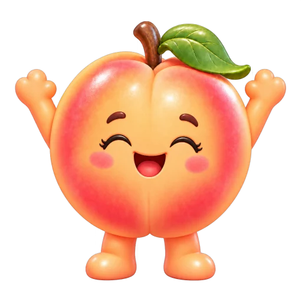

Abrindo a máquina…
Arraste para mover a garra para os lados, para a frente e para trás. A mira no chão mostra onde ela vai pegar.
Centralize e toque em PEGAR. A garra desce, fecha e leva o Happeach até a saída.
As peças valem de 1,2× a 3×. O recebimento inclui a aposta. O resultado depende da sua mira, sem sorteio escondido para soltar a garra.
